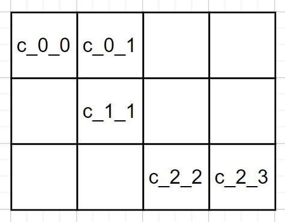

GLM: introduzione¶
Affrontiamo lo svliluppo di un sistema software che realizza il Il gioco Conway Life nella sua versione pratica introducendo la seguente ipotesi:
Ogni cella è un ente autonomo, che non condivide memoria con altri enti dello stesso tipo.
Questa locuzione in linguaggio naturale si presta a molteplici interpretazioni e per poter proseguire nel lavoro dobbiamo precisare il suo significato inteso.
Per evitare ogni ambiguità e per poter , intendiamo che una cella è un Actor del linguaggio (metmodello) qak, introdotto in QakActors24.
Attori qak¶
Al momento, ci basta sapere che un Actor qak:
è capace di inviere e ricevere messaggi (dispatch o request) ad altri Actor, conoscendone solo il nome
è capace di emettere informazione priva di destinatario, in forma di eventi, percepibili da altri Actor
fa parte di un ambiente, condiviso con altri Actor, denominato Context
possiede una base di conoscenza interna e la capacità di eseguire computazioni Prolog (si veda, più avanti, nello Sprint2: Aggiornamento della base di conoscenza dell’Actor)
MyName e myself¶
Un Actor qak:
è dotato di un nome univoco nel sistema, che viene memorizzato nella costante locale
MyName, di tipo String;può fare riferimento a sè stesso mediante la costante locale
myself, di tipo ActorBasic.
Un Actor qak ha molte altre proprietà che verranno introdotte in modo gradule nel seguito, mano a mano incontreremo le problematiche poste dall’applicazione.
Infrastruttura qak¶
Gli attori qak si avvalgono di un supporto run-time fornito dalla libreria unibo.qakactor23-5.0.jar.
Su questa base, possiamo affermare che una cella è autonoma in quanto possiede un suo proprio flusso di controllo. Non è un semplice processo (come inteso nei Sistemi Operativi) in quanto possiede la capacità intrinseca di scambiare informazioni (usando primitive di comunicazione di alto livello) con altri Actor , distinguendo tre macro-tipologie di messaggi:
dispatch
request
event
La griglia astratta¶
Da questo preludio, si potrebbe delineare uno scenario alquanto complicato:
: in un sistema dinamico-evolutivo, le celle-actor :
possono nascere indipendentemente l’una dall’altra
possono operare (e muoversi) in un ambiente comune (world)
possono determinare le proprie vicine tramite sensori, quando vengono a contatto l’una con l’altra
obbediscono a un principio di configurazione, che impedisce ad una cella di avere un numero di vicini diverso da
3,5,8.hanno la capacità ‘innata’ di le informazioni che provengono dalle celle vicine in modo da ottenere il comportamento collettivo voluto
Il gioco Conway Life invece, nasce con l’idea di una .
Adotteremo dunque anche qui l’assunto di impostare il gioco con riferimento a una griglia, ma si tratterà ora di una , che prefigura relazioni di vicinanza.
Denominazione delle celle¶
Il nome (univoco) di ogni cella-actor può essere concepito in modo da potere dedurne dal nome la posizione della cella nella griglia astratta.
Conoscendo il proprio nome, una cella può quindi . Ad esempio: c_0_0 ha come adiecenti 3 celle:
c_0_1, c_1_0, c_1_1
c_1_1 ha come adiecenti 8 celle:
c_0_0, c_0_1, c_0_2, c_1_0, c_1_2, c_2_0, c_2_1, c_2_2
Questa proprietà ci pemetterà in seguito di generare i nomi delle celle vicine a partire dal nome di una cella (si veda genNeighbornsDescr). |
 |
{kind=link}
Nel seguito, invece di parlare di celle-actor dead o live, preferiremo parlare di celle con stato acceso (on / true) o spento (off / false) assimilando ogni cella a una lampadina. Ad esempio, su un RaspberryPi, lo stato corrente della griglia astratta può essere visualizzata da un dispositivo come https://www.raspberrypi.com/products/sense-hat/.
Il processo di sviluppo¶
Iniziamo qui un processo di progettazione e sviluppo, con cui produrre, , una successione di prototipi funzionanti, ciascuno dei quali realizza uno specifico (sotto)insieme di funzionalità.
Benchè sia normalmente opportuno iniziare lo sviluppo dal sottosistema che ha la responibilità di realizzare la logica applicativa (il gioco, nel nostro caso), noi qui inizieremo dal sottosistema che ha la responsabilità di fornire all’utente finale un dispositivo di I/O (DisplayI/O), con cui visualizzare l’andamento del gioco e inviare comandi all’applicazione.
Questo per rendere immediatamente visibili al committente i comportamenti dei vari prototipi, mano a mano li svilupperemo. Naturalmente avremo cura di seguire il già citato principio (o regola):
, ma solo invocare funzioni definite nel livello applicativo.
Più avanti, riconoscendo la cetralità del software relativo al gioco rispetto al software di I/O, introdurremo un dispostivo di Output distinto dal DisplayI/O, progettato in modo da fungere da puro osservatore delle informazioi prodotte dal gioco così che che il codice applicativo non abbia alcuna dipendenza da esso.
Nel frattempo, ci occuperemo di progettare soluzioni in cui la comunicazione tra celle vicine avviene in modi diversi, dopo avere impostato una opportuna analisi del problema.
Il quadro generale delle attività relative al sistema GLM (GameLife a Messaggi) è riportato nell’indie che segue.